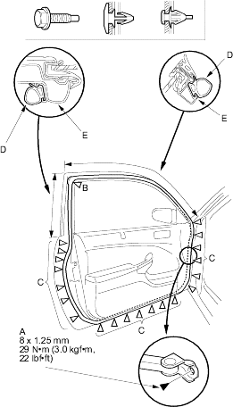
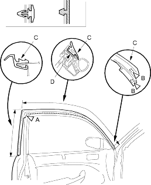

- Take care not to scratch the door.
- Use a clip remover to remove the clips.
- At the front-pillar, remove the door stop mounting bolt (A).
Fastener Location
A  : Bolt, 1B
: Bolt, 1B  : Clip, 1C : Clip, 17
: Clip, 1C : Clip, 17

- Detach the clips (B, C), then remove the door weatherstrip (D).
- Install the weatherstrip in the reverse order of removal and note these items:
- Replace any damaged clips.
- Make sure the weatherstrip is installed in the holder (E) securely.
- Apply liquid thread lock to door stop mounting bolt before installation.
- Check for water leaks, refer to the '01 CIVIC Shop Manual, P/N 62S5A00 on this CD (see step 7 on page 20-25).
- Take care not to scratch the door.
- Use a clip remover to remove the clips.
- Remove these items:
- Detach the door weatherstrip clips (A, B), then remove the door upper seal (C).
Fastener Location
A : Clip, 1B : Clip, 2

- Install the seal in the reverse order of removal and note these items:
- Replace the clip if it is damaged.
- Make sure the upper seal is installed in the holder (D) securely.
- Check for water leaks, refer to the '01 CIVIC Shop Manual, P/N 62S5A00 on this CD (see step 7 on page 20-25).